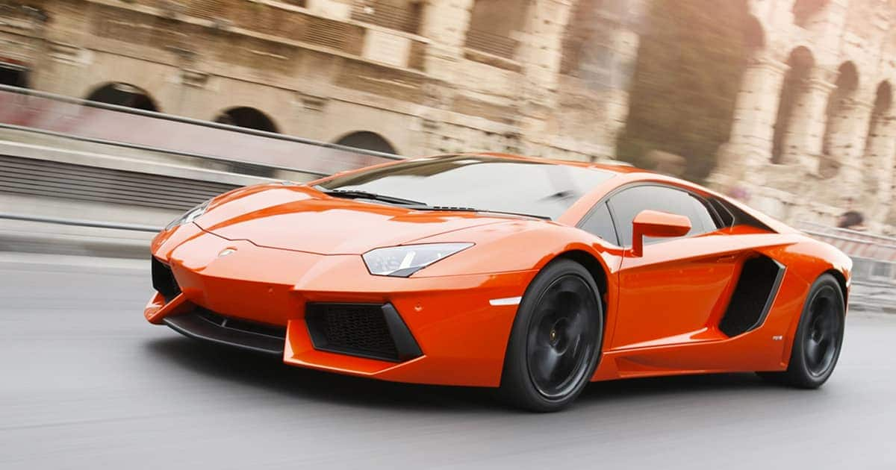

Lamborghini Aventador LP700-4 (укр. Ламборґіні Авентадор) — повнопривідний суперкар італійської спортивної преміум-марки Lamborghini. Представлений на Женевському автосалоні в березні 2011 року. Є заміною Lamborghini Murciélago.
Як і з моделлю Murciélago, материнська компанія Audi експлуатувала тему кориди. У рекламних матеріалах Lamborghini стверджувалося, що Aventador - це знаменитий бик, вирощений синами дона Челестино Куадрі Відеса, який прославився після одного з найбільш кровопролитних боїв в Сарагосі, за який отримав престижну нагороду «Trofeo de la Peña La Madroñera» за видатну хоробрість на арені. Приставка LP 700-4 в кінці назви означає технічне оснащення автомобіля, де 700 позначає потужність в к.с., а 4 - повний привід.
Lamborghini Aventador LP700-4 оснащується двигуном з безпосереднім впорскуванням палива. Двигун - дванадцятициліндровий, об'ємом 6,5 л і потужністю 700 к.с. Розгін від 0 до 100 км/год відбувається за 2,9 с; максимальна швидкість - 350 км/год. Машина оснащується семиступінчастою роботизованою коробкою передач і полегшеним алюмінієвим шасі. Споряджена маса - 1575 кг.
В середині травня 2015 року компанія Lamborghini, провела заїзд Aventador LP750-4 SV на Нюрбургринзі. Автомобіль проїхав коло за 6 хвилин 59,73 секунди. Результат був встановлений під час випробувань шин разом з компанією Pirelli. На авто було встановлено комплект шин P Zero Corsa. Автомобіль лише на 2 секунди повільніший за рекордсмена серед дорожніх автомобілів - Porsche 918 Spyder, що встановив рекорд на 6 хвилина 57 секунд, та на 9 секунд швидший за Nissan GT-R Nismo 2015. Ціна спец-версії в Європі складає 327 190 €. Купе випустять обмеженим тиражем в 600 екземплярів[3].
У середині серпня 2015 року на конкурсі елегантності в Pebble Beach Concours d'Elegance, Lamborghini представить спеціальну версію суперкару на базі Aventador Super Veloce з маркуванням «HyperVeloce». Потужність двигуна буде збільшена з 750 кінських сил до 800 кінських сил. Всього буде побудовано 30 екземплярів - 20 купе та 10 родстерів[4